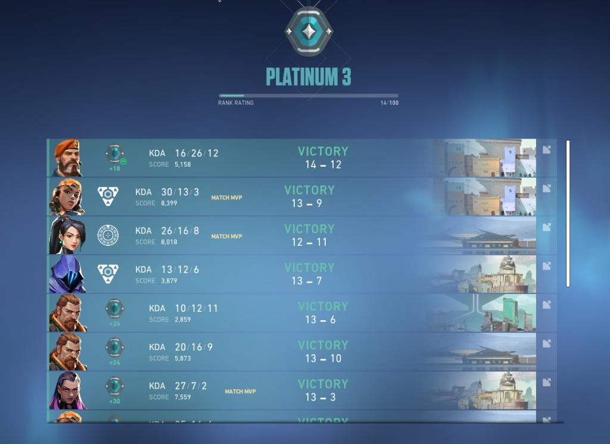
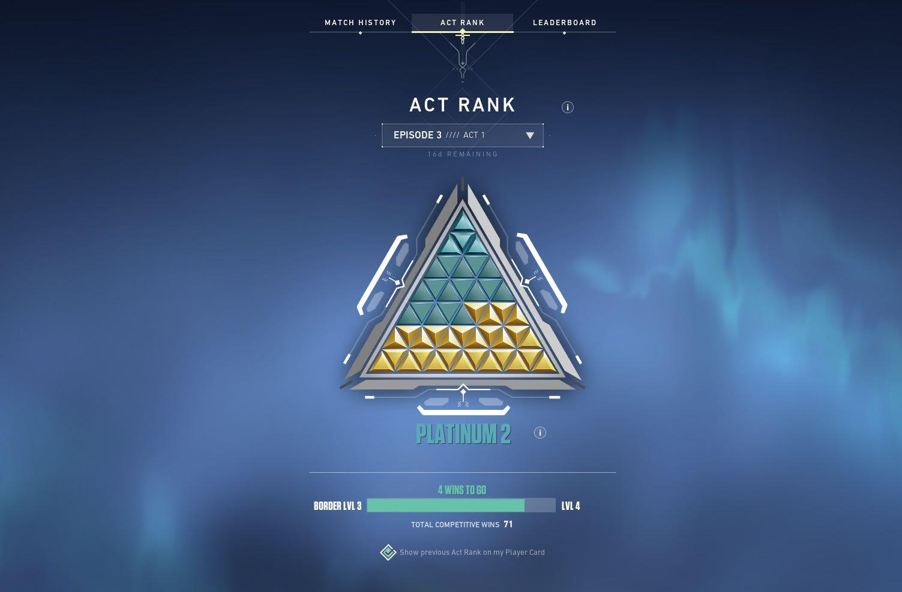

Valorant Ranked System

In valorant there is a total of 22 ranks in 8 different divisions with sub-divisions, each sub-division has 3 levels with 1 being the worst and 3 being the best. The lowest rank obtainable in valorant is "Iron 1", the highest obtainable rank is "Radiant". Radiant has no sub-divisions and contains the top 500 players from that region (EU, Asia, NA, etc).
To rank up or down in valorant you must gain or lose "rr", which stands for rank rating. The amount of rr you gain or lose is determined by your solo performance in a game. If you perform very well in a game it does not matter if you win or lose you will gain a "performance bonus". This basically means you gain more rr or lose less depending on if you won or lost the match
On top of valorants base ranks there is something called an act rank. After your 5 placement matches you get your base rank, from there each win and loss is marked on the pyramid shown in the image. Your act rank is your overall for that act.